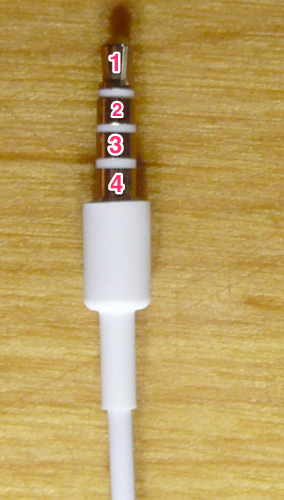
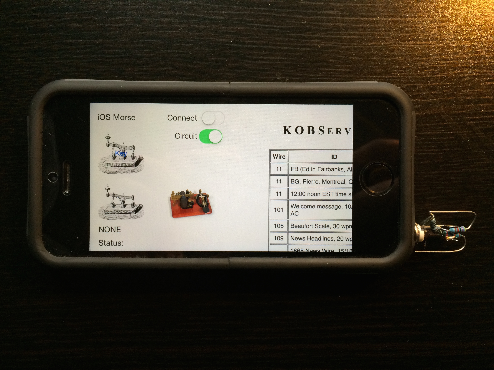

How to connect morse key to an iPhone? Using the buttons on the standard headphones does not work, as the apple interface does not provide low-level access to low-level events like button-down. The idea (R1, R2) will be (1) put a signal to one stereo channel (2) receive the same signal on the input channel (small resistor will simulate mic) (3) detect tone level changes for input channel -> real time-morse (4) put side-tone & co to remaining stereo channel.

-
1(Tip) - Key (Ground)
-
2 - Ear (Contact)
-
3 - Ear (Ground)
-
4(Ground) - R2(46,6k) - Key 1
-
4(Ground) - R3(22k) - Key 2
-
4(Ground) - R1(1k) - 3
I got a prototype running with irmc-ios (R4) and the same physical interface also works with iMorsix (R3). 
(R1) Hijacking Power from […] Audio Interface (R2) Sources: hijack-main (R3) App: iMorsix (R4) App: irmc-ios